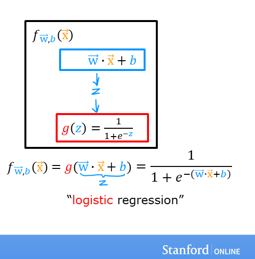

Optional Lab: Logistic Regression
In this ungraded lab, you will - explore the sigmoid function (also known as the logistic function) - explore logistic regression; which uses the sigmoid function
[1]:
import numpy as np
%matplotlib widget
import matplotlib.pyplot as plt
from plt_one_addpt_onclick import plt_one_addpt_onclick
from lab_utils_common import draw_vthresh
plt.style.use('./deeplearning.mplstyle')
Sigmoid or Logistic Function
|7959311b198a4e5b918798d237930608|As discussed in the lecture videos, for a classification task, we can start by using our linear regression model, \(f_{\mathbf{w},b}(\mathbf{x}^{(i)}) = \mathbf{w} \cdot \mathbf{x}^{(i)} + b\), to predict \(y\) given \(x\). - However, we would like the predictions of our classification model to be between 0 and 1 since our output variable \(y\) is either 0 or 1. - This can be accomplished by using a “sigmoid function” which maps all input values to values between 0 and 1.
Let’s implement the sigmoid function and see this for ourselves.
Formula for Sigmoid function
The formula for a sigmoid function is as follows -
\(g(z) = \frac{1}{1+e^{-z}}\tag{1}\)
In the case of logistic regression, z (the input to the sigmoid function), is the output of a linear regression model. - In the case of a single example, \(z\) is scalar. - in the case of multiple examples, \(z\) may be a vector consisting of \(m\) values, one for each example. - The implementation of the sigmoid function should cover both of these potential input formats. Let’s implement this in Python.
NumPy has a function called `exp() <https://numpy.org/doc/stable/reference/generated/numpy.exp.html>`__, which offers a convenient way to calculate the exponential ( \(e^{z}\)) of all elements in the input array (z).
It also works with a single number as an input, as shown below.
[2]:
# Input is an array.
input_array = np.array([1,2,3])
exp_array = np.exp(input_array)
print("Input to exp:", input_array)
print("Output of exp:", exp_array)
# Input is a single number
input_val = 1
exp_val = np.exp(input_val)
print("Input to exp:", input_val)
print("Output of exp:", exp_val)
Input to exp: [1 2 3]
Output of exp: [ 2.72 7.39 20.09]
Input to exp: 1
Output of exp: 2.718281828459045
The sigmoid function is implemented in python as shown in the cell below.
[3]:
def sigmoid(z):
"""
Compute the sigmoid of z
Args:
z (ndarray): A scalar, numpy array of any size.
Returns:
g (ndarray): sigmoid(z), with the same shape as z
"""
g = 1/(1+np.exp(-z))
return g
Let’s see what the output of this function is for various value of z
[4]:
# Generate an array of evenly spaced values between -10 and 10
z_tmp = np.arange(-10,11)
# Use the function implemented above to get the sigmoid values
y = sigmoid(z_tmp)
# Code for pretty printing the two arrays next to each other
np.set_printoptions(precision=3)
print("Input (z), Output (sigmoid(z))")
print(np.c_[z_tmp, y])
Input (z), Output (sigmoid(z))
[[-1.000e+01 4.540e-05]
[-9.000e+00 1.234e-04]
[-8.000e+00 3.354e-04]
[-7.000e+00 9.111e-04]
[-6.000e+00 2.473e-03]
[-5.000e+00 6.693e-03]
[-4.000e+00 1.799e-02]
[-3.000e+00 4.743e-02]
[-2.000e+00 1.192e-01]
[-1.000e+00 2.689e-01]
[ 0.000e+00 5.000e-01]
[ 1.000e+00 7.311e-01]
[ 2.000e+00 8.808e-01]
[ 3.000e+00 9.526e-01]
[ 4.000e+00 9.820e-01]
[ 5.000e+00 9.933e-01]
[ 6.000e+00 9.975e-01]
[ 7.000e+00 9.991e-01]
[ 8.000e+00 9.997e-01]
[ 9.000e+00 9.999e-01]
[ 1.000e+01 1.000e+00]]
The values in the left column are z, and the values in the right column are sigmoid(z). As you can see, the input values to the sigmoid range from -10 to 10, and the output values range from 0 to 1.
Now, let’s try to plot this function using the matplotlib library.
[5]:
# Plot z vs sigmoid(z)
fig,ax = plt.subplots(1,1,figsize=(5,3))
ax.plot(z_tmp, y, c="b")
ax.set_title("Sigmoid function")
ax.set_ylabel('sigmoid(z)')
ax.set_xlabel('z')
draw_vthresh(ax,0)
As you can see, the sigmoid function approaches 0 as z goes to large negative values and approaches 1 as z goes to large positive values.
Logistic Regression
 A logistic regression model applies the sigmoid to the familiar linear regression model as shown below:
where
\(g(z) = \frac{1}{1+e^{-z}}\tag{3}\)
[6]:
x_train = np.array([0., 1, 2, 3, 4, 5])
y_train = np.array([0, 0, 0, 1, 1, 1])
w_in = np.zeros((1))
b_in = 0
Try the following steps: - Click on ‘Run Logistic Regression’ to find the best logistic regression model for the given training data - Note the resulting model fits the data quite well. - Note, the orange line is ‘\(z\)’ or \(\mathbf{w} \cdot \mathbf{x}^{(i)} + b\) above. It does not match the line in a linear regression model. Further improve these results by applying a threshold. - Tick the box on the ‘Toggle 0.5 threshold’ to show the predictions if a threshold is applied. - These predictions look good. The predictions match the data - Now, add further data points in the large tumor size range (near 10), and re-run logistic regression. - unlike the linear regression model, this model continues to make correct predictions
[7]:
plt.close('all')
addpt = plt_one_addpt_onclick( x_train,y_train, w_in, b_in, logistic=True)
Congratulations!
You have explored the use of the sigmoid function in logistic regression.
[7]: